Designing Connected Care for Patients and Families
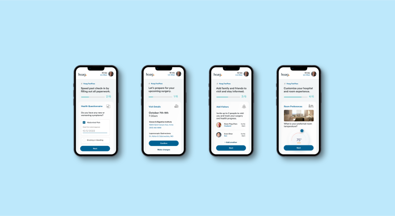
• The Bigger Picture
Context
Healthcare experiences don’t happen in one moment—they unfold across multiple visits, systems, and people. I worked to improve Medicare onboarding and connecting multi-visit care experiences.
The goal was to reduce fragmentation across digital and in-person healthcare touchpoints.
• What Was Broken
Problem
Efficiency with digital platforms is a big concern for the elderly because of visual, cognative difficulties.
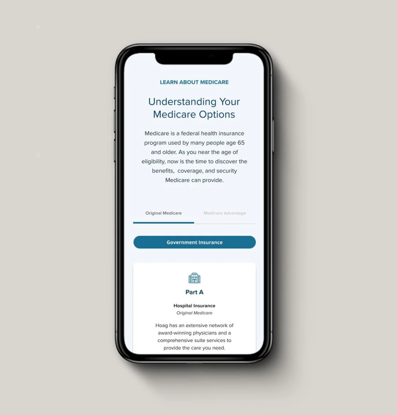
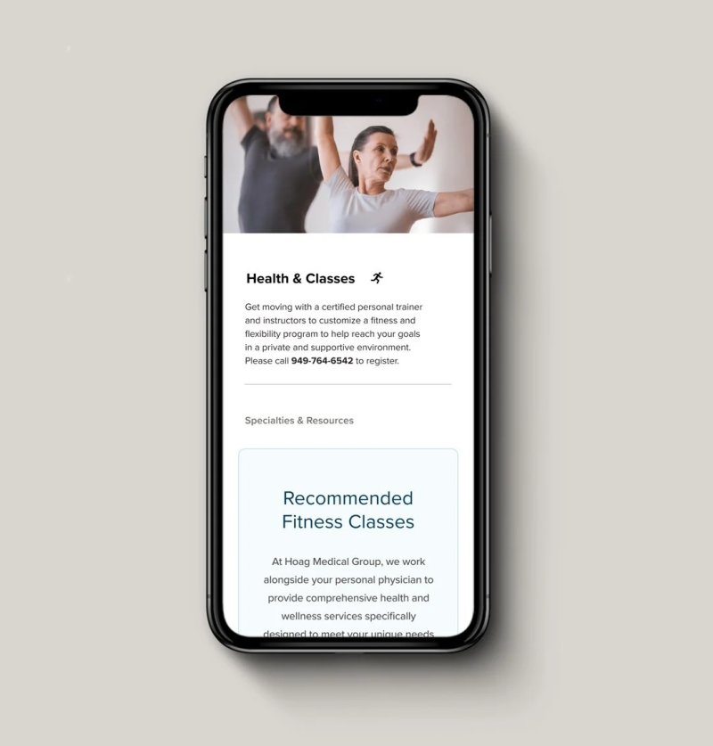
Patients
Healthcare journeys are fragmented, repetitive, and difficult to navigate—especially for seniors and families managing care together.
Business
Disconnected intake, onboarding, and care processes create inefficiencies and increase administrative burden across departments.
• Seat At The Table
Role

Conducted research across patient groups and care journeys.
Contributed to service design and UX strategy.
Collaborated with clinical and operational stakeholders.
• Reading Between Lines
Insight
“Healthcare experiences are most successful when they are continuous, not transactional.”
Synthesis from Hoag patient experience.
• Signals From The Noise
Key Findings
Patients want to be involved in planning their healthcare and want their loved ones involved too.
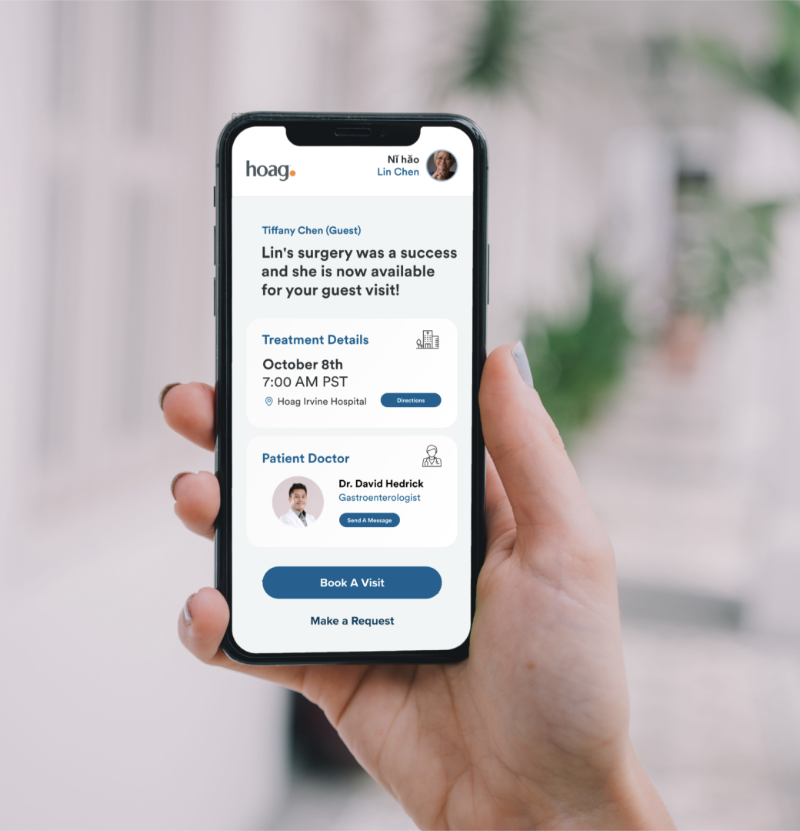
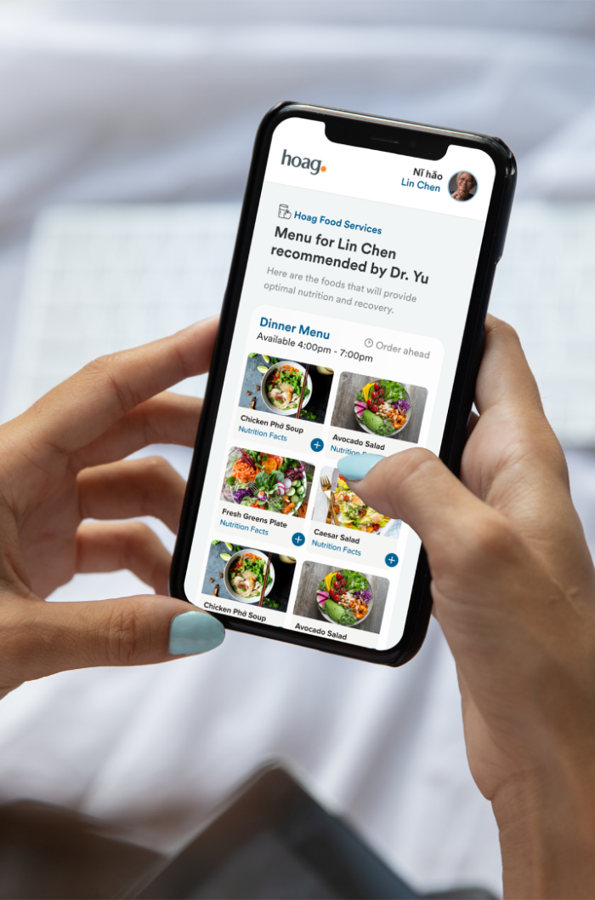
Visit-based care
Patients don’t see healthcare as a system; they experience it as separate, repeated visits.
Senior enrollment friction
Older adults struggle with time-sensitive processes like Medicare enrollment due to complexity and timing demands.
Unsupported caregivers
Families help manage care journeys but are not formally recognized or supported by the system.
Broken continuity loops
Repeated intake forms disrupt continuity by forcing patients to re-enter information each visit.
Operational perception impact
Small steps like check-in strongly shape how patients perceive overall care quality and ease.
• Where Ideas Landed
Solution
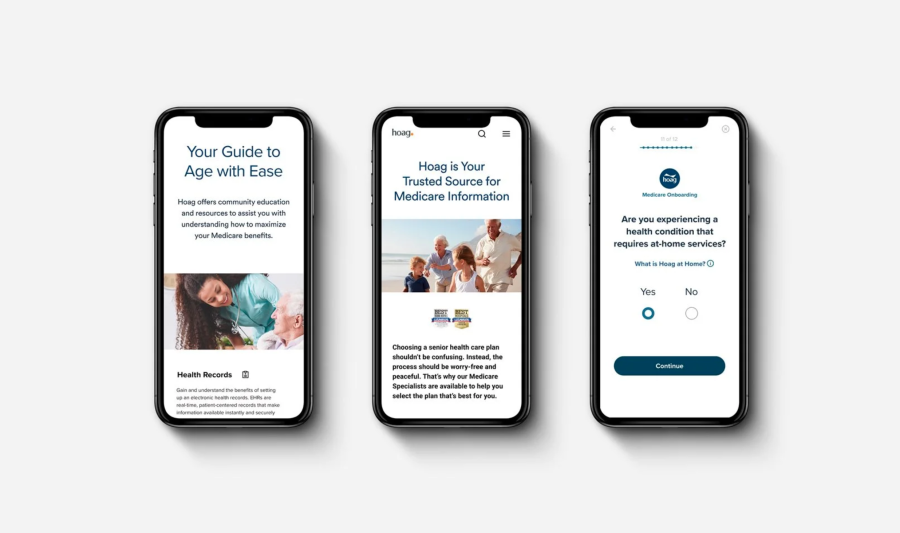
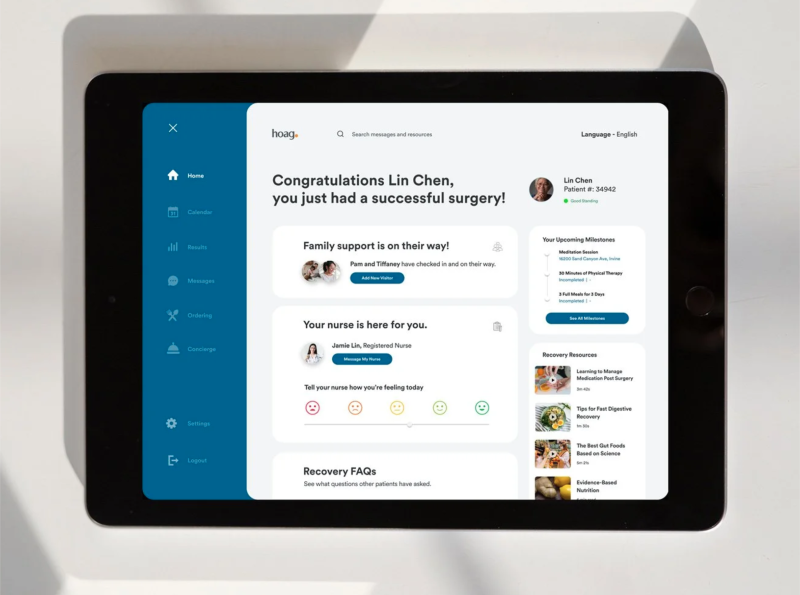
Help seniors navigate complex enrollment windows with less confusion and fewer missed steps while reducing redundancy and improving continuity across multi-visit care cycles.
Medicare Onboarding
Simplified onboarding and guidance flow.
Reduced reliance on in-person clarification.
Positioned Hoag as a trusted advisor in decision-making.
Digital Care Continuity
Introduced digital pre-registration before arrival.
Automated check-in to reduce front desk paperwork.
Enabled returning patients and family members to reuse stored information.
• Designing The Answer
Family-Center Care
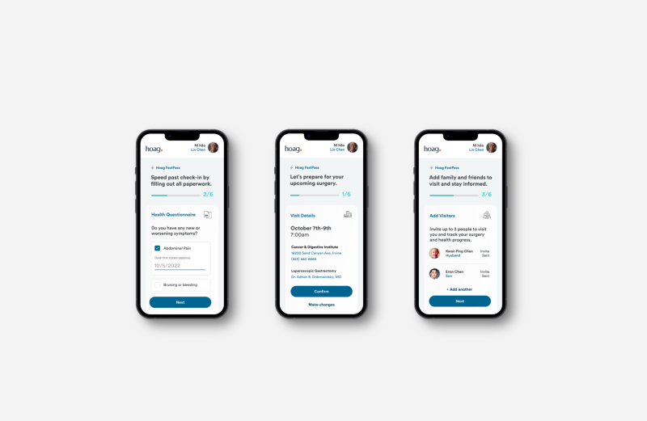
Families often assist with onboarding, decisions, and ongoing care.
Current systems do not formally support this collaboration.
Designing for healthcare requires acknowledging the patient + support network as a unit.
• Insight Into Form
Design Highlights
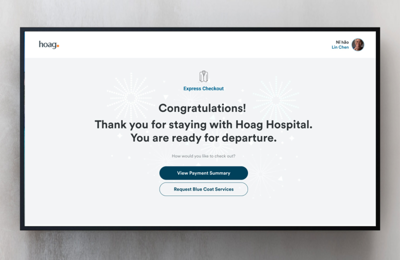
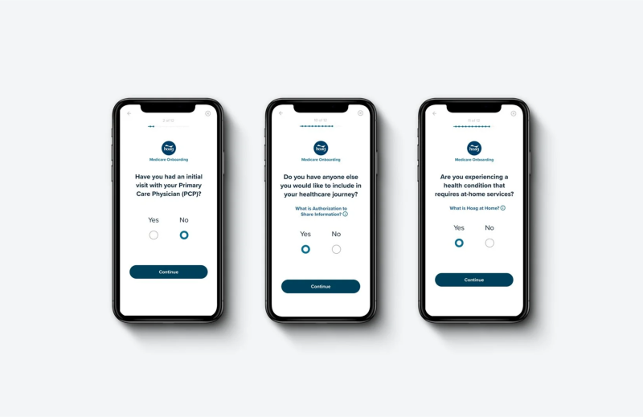
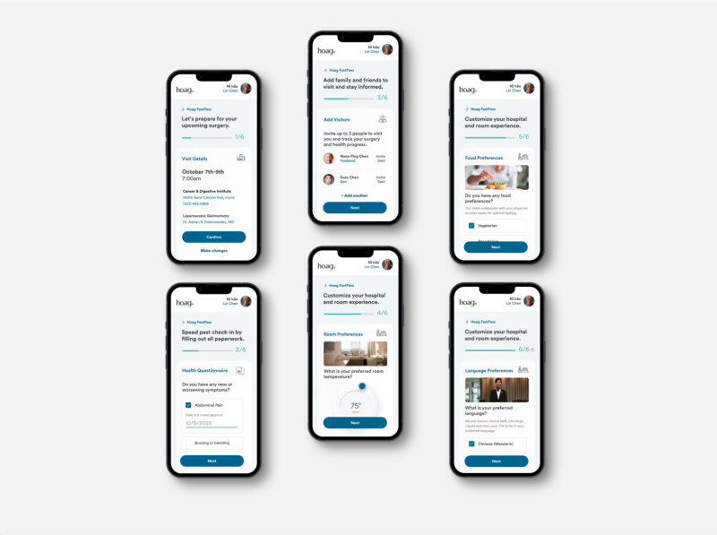
Reduced repetitive intake across visits.
Improved continuity between digital and in-person care.
Designed for accessibility across age groups and caregivers.
Supported system-wide consistency in high-friction touchpoints.
• Moving The Needle
Impact
Project Outcome
Identified major friction points in patient intake and onboarding flows.
Reduced redundancy in check-in processes through digital pre-registration concepts.
Improved continuity across multi-visit patient journeys.
Contributed to early-stage service design strategy for scalable healthcare systems.

• Lessons Worth Keeping